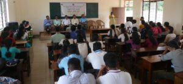
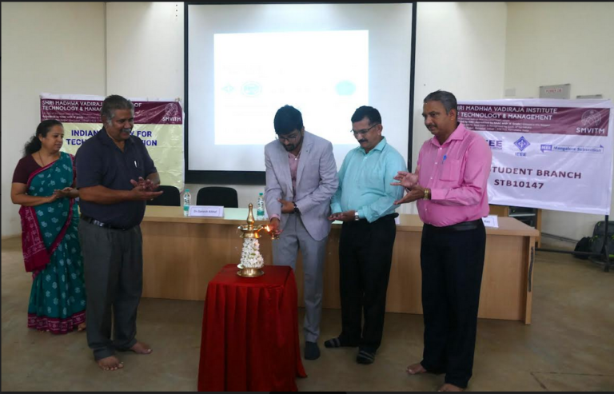
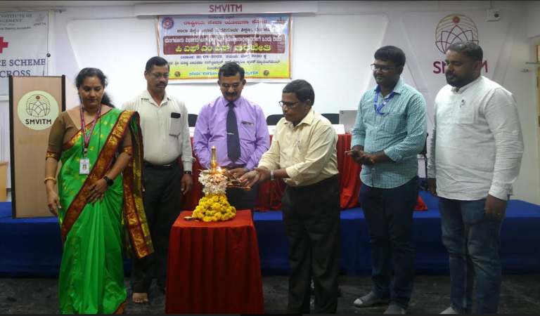
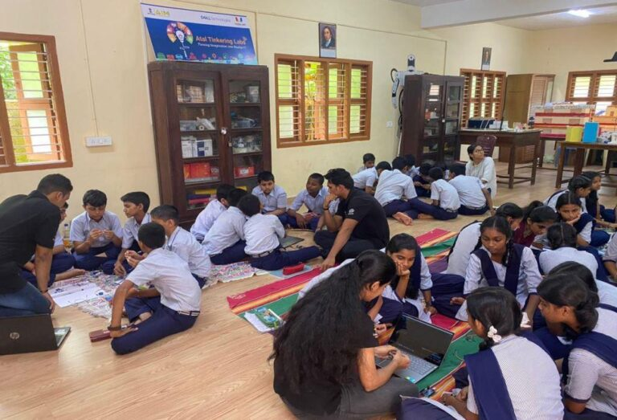
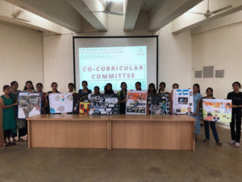

SMVITM GETS RECOGNISED
Shri Madhwa Vadiraja Institute of Technology and Management, Bantakal
is recognized as the mentor institute by the Ministry of Education’s
Innovation Cell. The SMVITM is the only institute recognized as the
mentor institute in Udupi district
and also one among the 13 colleges in Karnataka to achieve this.

SMVITM inaugurates NSS camp
The inaugural ceremony of annual special NSS camp of NSS
unit of Sri Madhwa Vadiraja Institute of Technology and Management (SMVITM),
Bantakalwas held on November 27 in the institute premises.

Workshop on “Cyber Security and Ethical Hacking"
Department of Artificial Intelligence & Data Science,
Artificial Intelligence & Machine Learning Engineering,
Department of Computer Science Engineering, ISTE & IEEE student
chapters of SMVITM in association with National Information and
Cyber Security Council (NICC) organized two days workshop on “Cyber
Security and Ethical Hacking” on
15 and 16 September 2023 in the institute premises.

One-day hands-on training program on PFMS
National Service Planning Cell, Department of Education, Bengaluru, NSS Unit of Shri Madhwa Vadiraja Institute of Technology and Management, Bantakal, Udupi jointly organized “One-day hands-on training program on PFMS” for the NSS Program officers of Mangalore Division on 31 August 2023 in the institute premises.

Arduino Workshop at Volakadu School
On 04th Sept 2023, a team of 6 students from SMVITM conducted an Arduino workshop at ATL – Govt. Composite Highschool, Valakadu, Udupi Students gave the insights on usage of Arduino board, basic components, LED, OLED and other relevant electronic components and also explained out IoT.

Poster Collage & Quiz competition
Co-curricular committee in association with ISTE student chapter of SMVITM and Hobby Project Club organized poster /Collage & Quiz competition for students of SMVITM in the institute premises on 14th September 2023 in the seminar hall of the library block. Total 14 posters were exhibited enthusiastically by the students. Topic for both the competition was Lunar Mission of New India.